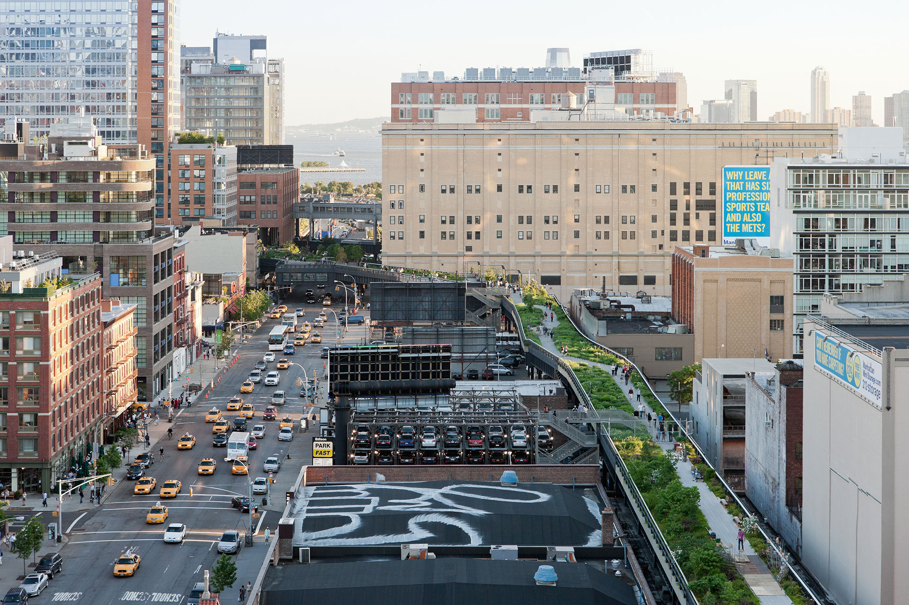
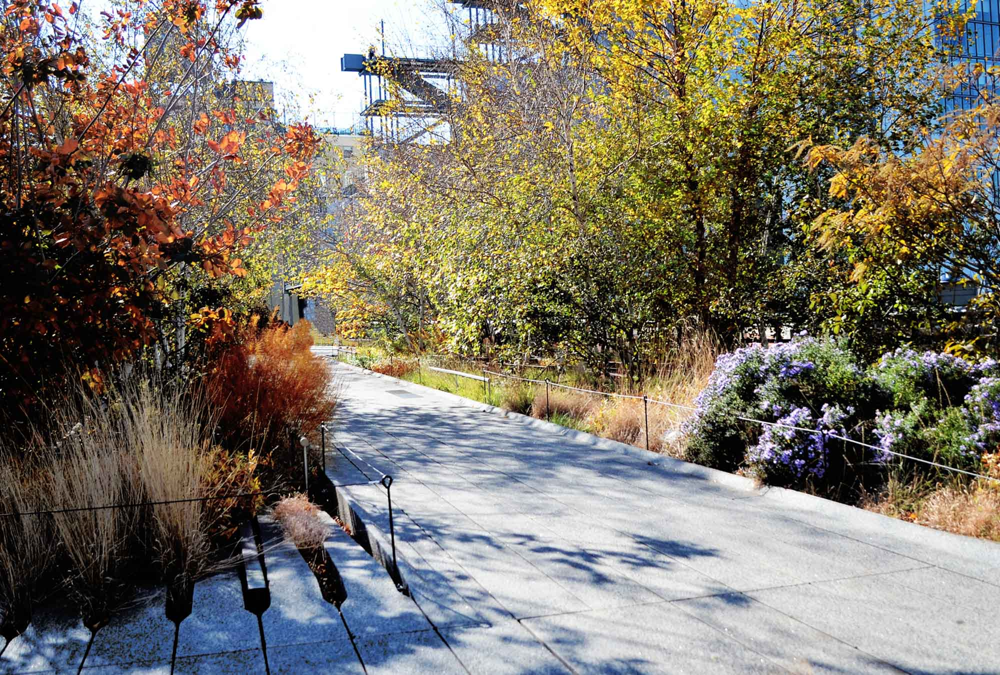
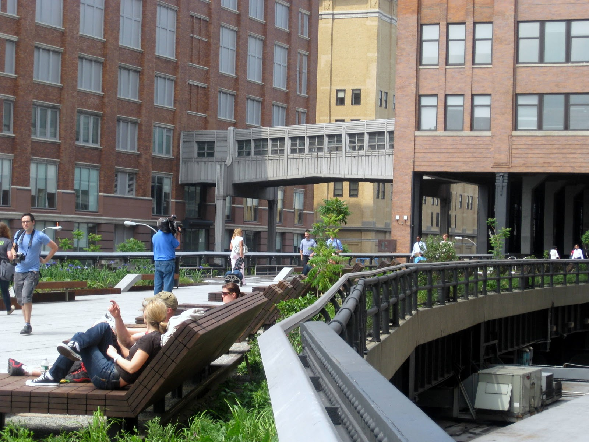

Highline
The connection I have with the High Line is the memory of the time I spent with my soon to be wife, one of the first moments where I realized these tours were starting to turn into dates. I believe the High Line is a great place to hang out with friends after going to a place like the Chelsea Market located on W 9th ave next to the High Line. Both the beauty of High Line and the great diverse food you can find in the Chelsea Market will assure a good time. I also believe the convenience of already being near Union Square and near so many other landmarks means that it can be a great addition to any day of sightseeing for a group of friends, a couple or a date.


The High Line begins in W 34th st. between 11th and 12th ave, it's around 1.45 miles long and ends on the corner of Washington St. and Gansevoort St. in the lower west side of Manhattan. It was a over the street railway line that was converted into a public open space completely by late 2014. Around that time I was giving a college friend from Japan around the city and was interested in seeing the High Line so I invited her.
ADDRESS:
New York, NY 10011
HOURS:
Thursday 7AM–10PM
Friday
(Veterans Day (Observed))
7AM–10PM
Hours might differ
Saturday
(Veterans Day)
7AM–10PM
Hours might differ
Sunday 7AM–10PM
Monday 7AM–10PM
Tuesday 7AM–10PM
Wednesday 7AM–10PM
DIRECTIONS:
Subway
L A C E to 14th Street & 8th Avenue
C E to 23rd Street & 8th Avenue
1 2 3 to 14th Street & 7th Avenue
1 to 18th Street & 7th Avenue
1 to 23rd Street & 7th Avenue
A C E 1 2 3 to 34 St Penn Station
7 to 34th Street – Hudson Yards
Bus
M11 to Washington Street
M11 to 9th Avenue
M14 to 9th Avenue
M
23 to 10th Avenue
M34 to 10th Avenue
Bike Racks
Bike racks are located at street level near the stairs at the following locations along the High Line. Please note that bicycles are not allowed on the High Line.
Gansevoort and Washington Streets
16th Street and 10th Avenue
18th Street and 10th Avenue
20th Street and 10th Avenue
23rd Street and 10th Avenue
26th Street and 10th Avenue
28th Street and 10th Avenue
30th Street and 10th Avenue
30th Street and 11th Avenue
ADMISSION:
Free
WEBSITE:
http://www.thehighline.org/